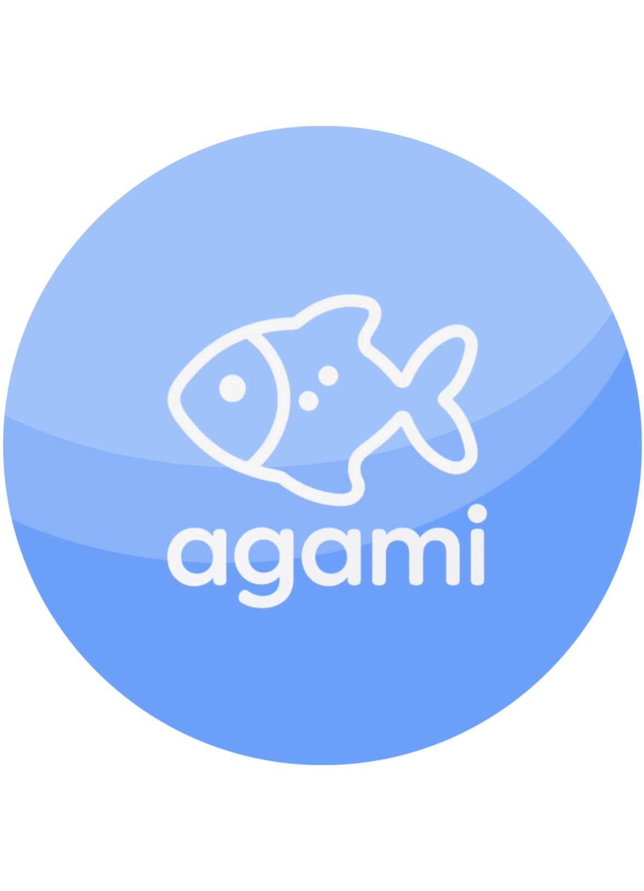

MAKE DATA.MAKE SENSE.
데이터와 AI로 실제 문제를 해결하는
개발자, 김서연입니다.

행동·상황 이해·실시간 반응을 검증해
AI 공격을 방어하는 인터랙티브 CAPTCHA
Flashlight CAPTCHA
3-Round Bot Block Rate · 3회 누적 봇 차단율
Flashlight 단일 모델
Accuracy
Emotion CAPTCHA
Qwen Attack Pass Rate
문제 해결 과정과 기여 보기
프로젝트 개요
기존 CAPTCHA가 AI에 의해 점점 쉽게 풀리는 문제에서 출발해, 단순 이미지 선택이나 문자 입력 대신 행동 데이터, 상황 이해, 실시간 반응을 이용해 사람과 Bot을 구분하는 CAPTCHA 시스템을 개발했습니다.
Flashlight CAPTCHA
- 어두운 화면에서 마우스로 손전등을 움직여 목표물을 찾는 방식
- x, y, time 로그에서 속도, 가속도, 방향 변화, 이동 거리 등 행동 특징 추출
- 시계열 특징은 GRU, 정적 특징은 MLP로 처리해 bot risk score 산출
- 단일 모델 Accuracy: 88.04%
- 3-Round Bot Block Rate: 99.16%
Emotion Judgment CAPTCHA
- 표정만으로 판단하기 어려운 상황 맥락 속 감정을 추론하는 방식
- AI 공격 테스트를 통해 AI가 쉽게 맞히는 문제 제거
- AI가 틀리는 문제의 출제 확률을 높이는 Weighted Sampling 적용
- Qwen Attack Pass Rate: 5.94% → 0.53%
Face & Hand Liveness
- 원본 영상 대신 Face / Hand Landmark Sequence를 이용해 실시간 반응 검증
- 얼굴의 시간적 변화는 GRU로 평가
- 랜덤 손동작 미션을 별도 판정 후 최종 위험도에 반영
- 개인정보 관점에서 원본 영상 대신 landmark 기반 처리 구조 사용
My Role
- Flashlight CAPTCHA GRU 모델링
- Emotion CAPTCHA 공격 테스트 및 Weighted Sampling
- Face Liveness GRU 모델링
- 3-Round Decision Engine 설계
Key Result / Learning
단일 모델 Accuracy만으로 실제 서비스의 안정성을 판단하기 어렵다는 점을 확인했습니다.
공격 성공 사례와 정상 사용자 오탐을 함께 분석하고, 여러 라운드의 결과를 누적하는 정책을 설계하면서 보안성과 사용성의 균형을 개선했습니다.
Limitation
얼굴·손 데이터의 다양성이 충분하지 않아 정상 사용자 오탐과 새로운 공격 유형에 대한 추가 검증이 필요했습니다.
Tech
Python · PyTorch · scikit-learn · MediaPipe · OpenCV · GRU · CUDA
문제에서 출발한
다양한 시도들.
프로젝트를 선택하면 과정과 기여, 결과를 자세히 볼 수 있습니다.
02DART Disclosure Analyst Agent
DART 공시 데이터를 구조화하고 원공시와 정정공시의 관계를 추적할 수 있도록 설계한 공시 분석 Agent 프로젝트
DART Disclosure Analyst Agent
DART 공시 데이터를 구조화하고 원공시와 정정공시의 관계를 추적할 수 있도록 설계한 공시 분석 Agent 프로젝트
4인 팀 · 데이터 파싱·전처리
데이터 규모
- 약 4,204건 공시
- 70개 기업
- 20개 산업군
담당 내용
- JSON / XML 파싱
- 공시 본문과 표 구조화
- 공통 스키마 설계
- 원공시–정정공시 연결 로직 설계
Correction Linking
정정공시는 다음 우선순위로 연결했습니다.
- Explicit receipt link
- Company + Report + Date
- Classification fallback
- Ambiguous
- Unresolved
정정된 공시를 이전 원문과 연결해 Agent가 오래된 내용을 그대로 사용하는 위험을 줄일 수 있는 데이터 구조를 만드는 것이 핵심이었습니다.
Tech
Python · JSON · XML · Data Parsing · Data Preprocessing
03부동산 시장 × 소비 변화 분석
부동산 가격 변화와 지역별 소비 변화의 관계를 분석하고 XGBoost Regression으로 소비 변화율을 예측한 프로젝트
부동산 시장 × 소비 변화 분석
부동산 가격 변화와 지역별 소비 변화의 관계를 분석하고 XGBoost Regression으로 소비 변화율을 예측한 프로젝트
4인 팀 · 데이터 전처리·모델링
프로젝트 내용
부동산 가격 변화와 특정 소비 변화 사이의 관계를 분석하고, 이를 지역 마케팅 타깃 선정에 활용할 수 있는지 검증했습니다.
데이터 전처리
- 지역명 표준화
- 결측치 처리
- 기간 정렬
- 여러 데이터 테이블 결합
- Snowflake 기반 모델 학습 데이터셋 구성
Modeling
- XGBoost Regression
- 지역별 특정 소비 변화율 예측
- RMSE 기준 반복 튜닝
결과 및 한계
카드 소비 데이터의 기간과 표본이 충분하지 않아 신뢰할 수 있는 지역 마케팅 결론까지 도출하지는 않았습니다.
If I redo it
더 긴 기간의 카드 소비 데이터를 확보해 시장 변화 전후를 비교합니다.
Tech
Snowflake · Python · Pandas · NumPy · scikit-learn · XGBoost
04서울 공공자전거 이용 분석
서울 따릉이 이용 데이터를 날씨·요일·대여 정보와 결합해 이용 패턴과 이용권 추천 가능성을 분석한 프로젝트
서울 공공자전거 이용 분석
서울 따릉이 이용 데이터를 날씨·요일·대여 정보와 결합해 이용 패턴과 이용권 추천 가능성을 분석한 프로젝트
2인 팀 · 데이터 전처리·모델링
프로젝트 내용
대여 시간, 대여소, 이용 시간, 이용권 유형, 날씨, 요일 정보를 결합해 서울 따릉이 이용 패턴을 분석했습니다.
전처리
서로 다른 데이터셋의 시·구·동 표기가 일치하지 않아 지역명을 직접 매핑해 결합했습니다.
모델링
- Logistic Regression
- Random Forest
- XGBoost
분석에서 확인한 패턴
- 비가 오는 날 이용량 감소
- 맑고 따뜻한 날 이용량 증가
사용자 단위 정보가 부족한 데이터 구조 때문에 이용권 추천 성능에는 한계가 있었습니다.
Tech
Python · Pandas · NumPy · scikit-learn · XGBoost · Matplotlib
05교내 공개 강의평가 서비스
학생이 직접 강의와 교수 정보를 검색하고 평가·댓글을 공유할 수 있도록 구현한 공개 강의평가 웹서비스
교내 공개 강의평가 서비스
학생이 직접 강의와 교수 정보를 검색하고 평가·댓글을 공유할 수 있도록 구현한 공개 강의평가 웹서비스
5인 팀 · PM / DB 설계 및 구축
주요 기능
- 회원가입 / 로그인
- 강의 검색
- 교수 조회
- 리뷰 작성
- 별점
- 댓글
담당 내용
- PM
- 요구사항 정리
- 일정·회의 관리
- 기능 우선순위 관리
- DB 설계 및 구축
- Oracle DB와 서비스 연결
Database
User / Professor / Lecture / Review / Rating / Comment 구조의 ERD를 설계하고 1NF–3NF 정규화를 적용했습니다.
Tech
Oracle · SQL · ERD · Normalization · HTML · CSS · JavaScript
06음식 배달 반품 계절성 분석
계절·음식 종류·주문 시간·배달 거리·날씨를 이용해 음식 배달 반품 발생 가능성을 분석한 프로젝트
음식 배달 반품 계절성 분석
계절·음식 종류·주문 시간·배달 거리·날씨를 이용해 음식 배달 반품 발생 가능성을 분석한 프로젝트
4인 팀 · PM / 데이터 전처리·모델링
프로젝트 내용
계절, 음식 종류, 주문 시간, 배달 거리, 온도와 날씨 데이터를 이용해 음식 배달 반품 발생 가능성을 분석했습니다.
담당 내용
- PM
- 일정 관리
- 회의 진행
- 역할 분배
- 분석 방향 설정
- 데이터 전처리
- 일부 모델링
Modeling
결측치와 이상치를 처리하고 여러 테이블을 결합한 뒤 XGBoost 기반 예측 모델을 실험했습니다.
Tech
Python · Pandas · NumPy · scikit-learn · XGBoost · Matplotlib
이해하고.
만들고.
개선합니다.
복잡한 문제를 데이터로 이해하고, 모델을 만들고 검증하며, 더 나은 방향으로 개선하는 과정을 좋아합니다.
필요할 때는 요구사항과 우선순위를 정리하며 팀의 방향도 함께 이끌어왔습니다.
- Programming
- Python · JavaScript · HTML · CSS
- Machine Learning
- scikit-learn · PyTorch · XGBoost · GRU
- Data
- Pandas · NumPy · Snowflake · JSON/XML Parsing
- Database
- SQL · Oracle · ERD · Normalization · DB Integration
- Computer Vision / Sequence
- MediaPipe · OpenCV
- Model Evaluation
- Threshold Optimization · Attack Testing · Feature Analysis
배움의 기록.
카카오클라우드 AIaaS
마스터 클래스 4기
우수 수료팀 선정
Final Project: AGAMI · ML 개발 및 검증
홍익대학교 세종캠퍼스
소프트웨어융합학과 · 편입
숭의여자대학교
IT비즈니스과